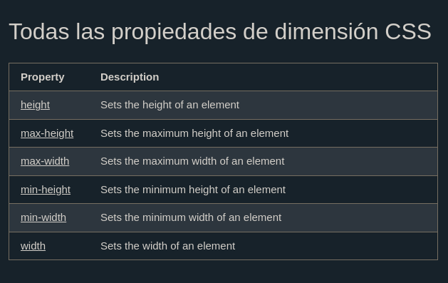

El CSS las propiedades height y width se utilizan para establecer la altura y el ancho de un elemento.
La propiedad max-width CSS se utiliza para establecer el ancho máximo de un elemento.
Este elemento tiene una altura de 50 pixeles y un ancho del 100%
Las propiedades height y width se utilizan para establecer la altura y el ancho de un elemento.
Las propiedades de alto y ancho no incluyen relleno, bordes ni márgenes. Establece la altura/ancho del área dentro del relleno, borde y margen del elemento.
Las propiedades heighty widthpueden tener los siguientes valores:
auto- Esto es lo predeterminado. El navegador calcula el alto y el ancho.
length- Define el alto/ancho en px, cm, etc.
%- Define la altura/ancho en porcentaje del bloque contenedor.
initial- Establece la altura/ancho a su valor predeterminado
inherit- La altura/ancho se heredará de su valor principal.
Ejemplos de altura y ancho de css
Este elemento tiene una altura de 200 pixeles y un ancho del 50%
Este elemento tiene una altura de 100 pixeles y un ancho de 500 pixeles
La propiedad max-width se utiliza para establecer el ancho máximo de un elemento.
Se puede especificar max-width en valores de longitud , como px, cm, etc., o en porcentaje (%) del bloque contenedor, o establecerse en ninguno (esto es el valor predeterminado. Significa que no hay un ancho máximo).
El problema con el div anterior ocurre cuando la ventana del navegador es más pequeña que el ancho del elemento (500 px). Luego, el navegador agrega una barra de desplazamiento horizontal a la página.
Usarlo max-width en su lugar, en esta situación, mejorará el manejo de ventanas pequeñas por parte del navegador
Consejo: arrastre la ventana del navegador a un ancho inferior a 500 px para ver la diferencia entre los dos divs.
Este elemento tiene una altura de 100px y un ancho de 500 px
Nota: Si por alguna razón usa la propiedad width y la propiedad max-width en el mismo elemento, y el valor de la propiedad width es mayor que la propiedad max-width;se utilizará la propiedad max-width (y se ignorará la propiedad width).
